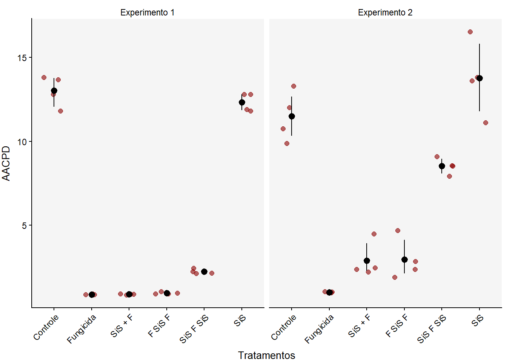

library(gsheet)
library(tidyverse)
library(DT)
library(patchwork)
library(performance)
library(emmeans)
library(DHARMa)
library(multcomp)
library(multcompView)
library(epifitter)
library(r4pde)
library(knitr)
library(kableExtra)Parâmetros Epidemiológicos
Carregamento dos pacotes
Área Abaixo da Curva de Progresso da Doença
Importação dos dados - Progresso Temporal da Doença (PTD)
Os dados utilizados nesta análise serão importados de uma planilha google sheet.
PTD <- gsheet2tbl("https://docs.google.com/spreadsheets/d/1t1oOnimLXdx6rqtDiYg6wNXB2byY8_Z-/edit#gid=1737712336")
## Mudando os dados de percentagem para proporção
PTD = PTD |>
mutate(SEVERIDADE = SEVERIDADE/100)
## Mudando o nome dos tratamentos
TRATAMENTO <- c("Controle", "Fungicida", "SiS + F", "F SiS F", "SiS F SiS", "SiS")
names(TRATAMENTO) <- c("1", "2", "3", "4", "5", "6") # Mapeando números para nomes de tratamentos
# Atualizar a variável tratamento no data frame
PTD$TRATAMENTO <- factor(PTD$TRATAMENTO, levels = names(TRATAMENTO), labels = TRATAMENTO)Preparando os dados para análise
Após importação os dados serão manipulados para obtermos a severidade média por experimento, tratamento e tempo.
PTD_2 <- PTD %>%
group_by(EXPERIMENTO, TRATAMENTO, TEMPO) %>%
summarise(sev_mean = mean(SEVERIDADE)) %>%
mutate(EXPERIMENTO = as.factor(EXPERIMENTO),
TRATAMENTO = as.factor(TRATAMENTO),
TEMPO = as.numeric (TEMPO))
head(PTD_2)# A tibble: 6 × 4
# Groups: EXPERIMENTO, TRATAMENTO [2]
EXPERIMENTO TRATAMENTO TEMPO sev_mean
<fct> <fct> <dbl> <dbl>
1 1 Controle 41 0.00188
2 1 Controle 57 0.0191
3 1 Controle 71 0.0564
4 1 Controle 84 0.433
5 1 Controle 99 0.786
6 1 Fungicida 41 0.00194Cálculo da área abaixo da curva de progresso da doença
Para calcular a área abaixo da curva de progresso da doença (AACPD), utilizaremos a função audpc (epifitter). Com essa função, manipularemos os dados de modo que, ao final, tenhamos um valor de AACPD para cada ensaio, bloco e tratamento.
PTD_3 <- PTD %>%
dplyr::group_by (EXPERIMENTO, TRATAMENTO, BLOCO) %>%
summarise(audpc = AUDPC(TEMPO, SEVERIDADE)) %>%
dplyr::mutate(EXPERIMENTO = as.factor(EXPERIMENTO),
TRATAMENTO = as.factor(TRATAMENTO),
BLOCO = as.factor(BLOCO))head(PTD_3)# A tibble: 6 × 4
# Groups: EXPERIMENTO, TRATAMENTO [2]
EXPERIMENTO TRATAMENTO BLOCO audpc
<fct> <fct> <fct> <dbl>
1 1 Controle 1 11.8
2 1 Controle 2 13.8
3 1 Controle 3 12.8
4 1 Controle 4 13.7
5 1 Fungicida 1 0.908
6 1 Fungicida 2 0.876Visualização Gráfica
theme_set(r4pde::theme_r4pde(font_size = 10))
PTD_3 %>%
ggplot(aes(TRATAMENTO, audpc)) +
geom_jitter(width = 0.3, alpha = 0.6, colour = "darkred", size = 2) +
stat_summary(fun.data = "mean_cl_boot", color = "black") +
labs(x = "Tratamentos",
y = "AACPD") +
theme(
axis.title.y = element_text(vjust = +3),
axis.title.x = element_text(vjust = -1),
axis.text.x = element_text(angle = 45, hjust = 1)
) +
facet_wrap(~ EXPERIMENTO, labeller = labeller(EXPERIMENTO =
c("1" = "Experimento 1",
"2" = "Experimento 2")))
Determinação do modelo
Para definir se é possível ou não realizar a análise da varíavel AACPD (audpc) combinando os resultados dos ensaios, será feita uma análise de variância (ANOVA) considerando o experimento (ensaio) como um fator.
PTD_AUDPC <- lm(audpc ~ TRATAMENTO*EXPERIMENTO + BLOCO,
data = PTD_3)anova(PTD_AUDPC)Analysis of Variance Table
Response: audpc
Df Sum Sq Mean Sq F value Pr(>F)
TRATAMENTO 5 1183.25 236.650 253.5203 < 2.2e-16 ***
EXPERIMENTO 1 35.51 35.507 38.0377 5.898e-07 ***
BLOCO 3 2.68 0.894 0.9582 0.424
TRATAMENTO:EXPERIMENTO 5 68.33 13.667 14.6408 1.408e-07 ***
Residuals 33 30.80 0.933
---
Signif. codes: 0 '***' 0.001 '**' 0.01 '*' 0.05 '.' 0.1 ' ' 1Pela análise de variância, considerando o experimento (ensaio) como um fator, observamos que há interação entre fatores (TRATAMENTO:EXPERIMENTO, valor de probabilidade < 0.05), logo não será possível analisar a área abaixo da curva de progresso da doença (AACPD - audpc) em conjunto, sendo necessário avaliação dos experimentos individualmente.
Cálculo da AACPD por experimento
Modelo para análise - AACPD, experimento 1
PTD_E1 <- PTD_3 %>%
filter(EXPERIMENTO == 1)PTD_AUDPC_1 <- lm(audpc ~ TRATAMENTO + BLOCO,
data = PTD_E1)Avaliação das premissas
check_normality(PTD_AUDPC_1)OK: residuals appear as normally distributed (p = 0.299).check_heteroscedasticity(PTD_AUDPC_1)Warning: Heteroscedasticity (non-constant error variance) detected (p < .001).Pelo fato de não haver homogeneidade de variâncias entre os grupos, será preciso transformar os dados. Uma alternativa será definir um modelo com o logaritmo da audpc.
Modelo transformado e nova avaliação das premissas
PTD_AUDPC_1_log <- lm(log(audpc) ~ TRATAMENTO + BLOCO,
data = PTD_E1)check_normality(PTD_AUDPC_1_log)OK: residuals appear as normally distributed (p = 0.207).check_heteroscedasticity(PTD_AUDPC_1_log)OK: Error variance appears to be homoscedastic (p = 0.906).plot(simulateResiduals(PTD_AUDPC_1_log))Pelos resultados obtidos para as análises de normalidade e homocedasticidade, observamos que os dados atendem às pressuposições da ANOVA. Portanto, não serão necessárias transformações. Assim, podemos prosseguir a análise.
ANOVA
anova(PTD_AUDPC_1_log)Analysis of Variance Table
Response: log(audpc)
Df Sum Sq Mean Sq F value Pr(>F)
TRATAMENTO 5 33.380 6.6759 2912.5326 <2e-16 ***
BLOCO 3 0.013 0.0045 1.9476 0.1653
Residuals 15 0.034 0.0023
---
Signif. codes: 0 '***' 0.001 '**' 0.01 '*' 0.05 '.' 0.1 ' ' 1Comparação de médias
medias_PTD_AUDPC_1 <- emmeans(PTD_AUDPC_1_log, ~ TRATAMENTO, type = "response")
medias_PTD_AUDPC_1 TRATAMENTO response SE df lower.CL upper.CL
Controle 12.999 0.3112 15 12.353 13.680
Fungicida 0.878 0.0210 15 0.834 0.924
SiS + F 0.889 0.0213 15 0.844 0.935
F SiS F 0.964 0.0231 15 0.916 1.014
SiS F SiS 2.242 0.0537 15 2.130 2.359
SiS 12.318 0.2949 15 11.705 12.963
Results are averaged over the levels of: BLOCO
Confidence level used: 0.95
Intervals are back-transformed from the log scale cld(medias_PTD_AUDPC_1,
Letters = LETTERS) TRATAMENTO response SE df lower.CL upper.CL .group
Fungicida 0.878 0.0210 15 0.834 0.924 A
SiS + F 0.889 0.0213 15 0.844 0.935 A
F SiS F 0.964 0.0231 15 0.916 1.014 A
SiS F SiS 2.242 0.0537 15 2.130 2.359 B
SiS 12.318 0.2949 15 11.705 12.963 C
Controle 12.999 0.3112 15 12.353 13.680 C
Results are averaged over the levels of: BLOCO
Confidence level used: 0.95
Intervals are back-transformed from the log scale
P value adjustment: tukey method for comparing a family of 6 estimates
Tests are performed on the log scale
significance level used: alpha = 0.05
NOTE: If two or more means share the same grouping symbol,
then we cannot show them to be different.
But we also did not show them to be the same. Coeficiente de Variação (CV)
CV_AUDPC_1 <- agricolae::cv.model(PTD_AUDPC_1) %>%
round(digits = 2)
CV_AUDPC_1[1] 8.39Modelo para análise - AACPD, experimento 2
PTD_E2 <- PTD_3 %>%
filter(EXPERIMENTO == 2)PTD_AUDPC_2 <- lm(audpc ~ TRATAMENTO + BLOCO,
data = PTD_E2)Avaliação das premissas
check_normality(PTD_AUDPC_2)OK: residuals appear as normally distributed (p = 0.489).check_heteroscedasticity(PTD_AUDPC_2)Warning: Heteroscedasticity (non-constant error variance) detected (p = 0.005).Pelo fato de também não haver homogeneidade de variâncias entre os grupos do ensaio dois, será preciso adotar a transformalçao por log para esses dados.
Modelo transformado e nova avaliação das premissas
PTD_AUDPC_2_log <- lm(log(audpc) ~ TRATAMENTO + BLOCO,
data = PTD_E2)check_normality(PTD_AUDPC_2_log)OK: residuals appear as normally distributed (p = 0.725).check_heteroscedasticity(PTD_AUDPC_2_log)OK: Error variance appears to be homoscedastic (p = 0.614).plot(simulateResiduals(PTD_AUDPC_2_log))
Apesar dos resultados obtidos pela avaliação do pacote DHARMa apontarem desvios em relação a homogeneidade das variâncias, os testes realizados pelo pacote performance demonstram homogeneidade e homocedasticidade. Assim, decidimos prosseguir com as análises.
ANOVA
anova(PTD_AUDPC_2_log)Analysis of Variance Table
Response: log(audpc)
Df Sum Sq Mean Sq F value Pr(>F)
TRATAMENTO 5 20.7015 4.1403 112.775 2.372e-11 ***
BLOCO 3 0.3577 0.1192 3.248 0.05168 .
Residuals 15 0.5507 0.0367
---
Signif. codes: 0 '***' 0.001 '**' 0.01 '*' 0.05 '.' 0.1 ' ' 1Comparação de médias
medias_PTD_AUDPC_2 <- emmeans(PTD_AUDPC_2_log, ~ TRATAMENTO, type = "response")
medias_PTD_AUDPC_2 TRATAMENTO response SE df lower.CL upper.CL
Controle 11.42 1.0938 15 9.308 14.00
Fungicida 1.02 0.0974 15 0.829 1.25
SiS + F 2.77 0.2649 15 2.254 3.39
F SiS F 2.79 0.2670 15 2.272 3.42
SiS F SiS 8.52 0.8162 15 6.946 10.45
SiS 13.64 1.3064 15 11.117 16.73
Results are averaged over the levels of: BLOCO
Confidence level used: 0.95
Intervals are back-transformed from the log scale cld(medias_PTD_AUDPC_2,
Letters = LETTERS) TRATAMENTO response SE df lower.CL upper.CL .group
Fungicida 1.02 0.0974 15 0.829 1.25 A
SiS + F 2.77 0.2649 15 2.254 3.39 B
F SiS F 2.79 0.2670 15 2.272 3.42 B
SiS F SiS 8.52 0.8162 15 6.946 10.45 C
Controle 11.42 1.0938 15 9.308 14.00 CD
SiS 13.64 1.3064 15 11.117 16.73 D
Results are averaged over the levels of: BLOCO
Confidence level used: 0.95
Intervals are back-transformed from the log scale
P value adjustment: tukey method for comparing a family of 6 estimates
Tests are performed on the log scale
significance level used: alpha = 0.05
NOTE: If two or more means share the same grouping symbol,
then we cannot show them to be different.
But we also did not show them to be the same. Coeficiente de Variação (CV)
CV_AUDPC_2 <- agricolae::cv.model(PTD_AUDPC_2) %>%
round(digits = 2)
CV_AUDPC_2[1] 17.07Tabela da área abaixo da curva de progresso da doença (AACPD)
cld_AA1 <- cld(medias_PTD_AUDPC_1,
Letters = LETTERS)
cld_AA2 <- cld(medias_PTD_AUDPC_2,
Letters = LETTERS)
table_AA_1 <- cld_AA1 %>%
dplyr::select(TRATAMENTO, response, .group) %>%
dplyr::arrange(TRATAMENTO) %>%
mutate(response = round(response, 2))
table_AA_2 <- cld_AA2 %>%
dplyr::select(TRATAMENTO, response, .group)%>%
dplyr::arrange(TRATAMENTO) %>%
dplyr::mutate(TRATAMENTO = NULL) %>%
mutate(response = round(response, 2))
linha_CV <- c('CV',CV_AUDPC_1,' ',CV_AUDPC_2,' ')
combined_table_aa <- cbind(table_AA_1, table_AA_2)
combined_table_aa2 <- rbind(combined_table_aa, linha_CV)
colnames(combined_table_aa2) <- c('Tratamento', 'Média', 'Grupo', 'Média', 'Grupo')
opts <- options(knitr.kable.NA = "CV (%)")
knitr::kable(
combined_table_aa2,
align = "cccccc",
row.names=FALSE,
booktabs = TRUE, valign = 't') %>%
add_header_above(c(" " = 1, "Ensaio 1" = 2, "Ensaio 2" = 2)) %>%
add_header_above(c("Área Abaixo da Curva de Progresso da Doença" = 5))| Tratamento | Média | Grupo | Média | Grupo |
|---|---|---|---|---|
| Controle | 13 | C | 11.42 | CD |
| Fungicida | 0.88 | A | 1.02 | A |
| SiS + F | 0.89 | A | 2.77 | B |
| F SiS F | 0.96 | A | 2.79 | B |
| SiS F SiS | 2.24 | B | 8.52 | C |
| SiS | 12.32 | C | 13.64 | D |
| CV (%) | 8.39 | 17.07 |
Severidade Final (y)
Importanto os dados - Parâmetros Epidemiológicos (PE)
# A tibble: 6 × 5
EXPERIMENTO TRATAMENTO BLOCO SEVERIDADE_FINAL DESFOLHA
<fct> <fct> <fct> <dbl> <dbl>
1 1 Controle 1 0.769 4.12
2 1 Controle 2 0.805 4.5
3 1 Controle 3 0.7 4
4 1 Controle 4 0.87 4
5 1 Fungicida 1 0.0262 1.1
6 1 Fungicida 2 0.025 1.15Visualização Gráfica
Modelo para análise em fatorial
Para definir se é possível ou não realizar a análise da varíavel SEVERIDADE_FINAL combinando os resultados dos ensaios, será feita uma análise de variância (ANOVA) considerando o experimento (ensaio) como um fator.
Analysis of Variance Table
Response: SEVERIDADE_FINAL
Df Sum Sq Mean Sq F value Pr(>F)
TRATAMENTO 5 3.6988 0.73977 602.2547 < 2.2e-16 ***
EXPERIMENTO 1 0.0000 0.00001 0.0070 0.9340
BLOCO 3 0.0051 0.00170 1.3824 0.2653
TRATAMENTO:EXPERIMENTO 5 0.2410 0.04821 39.2455 5.836e-13 ***
Residuals 33 0.0405 0.00123
---
Signif. codes: 0 '***' 0.001 '**' 0.01 '*' 0.05 '.' 0.1 ' ' 1Pela ANOVA considerando o experimento (ensaio) como um fator, observamos que há interação entre fatores (TRATAMENTO:EXPERIMENTO, valor de probabilidade < 0.05), logo não será possível analisar os dados em conjunto, sendo preciso avaliar cada experimento individualmente.
Modelo para análise - SF, experimento 1
Avaliação das premissas
OK: residuals appear as normally distributed (p = 0.132).Warning: Heteroscedasticity (non-constant error variance) detected (p < .001).
Pelo fato de não haver homogeneidade de variâncias entre os grupos, será preciso transformar os dados. Uma alternativa será definir um modelo com o logaritmo da severidade final.
Modelo transformado e nova avaliação das premissas
OK: residuals appear as normally distributed (p = 0.974).OK: Error variance appears to be homoscedastic (p = 0.666).Pelos resultados obtidos para as análises de normalidade e homocedasticidade, observamos que os dados atendem às pressuposições da ANOVA, com isso podemos prosseguir.
ANOVA
Analysis of Variance Table
Response: log(SEVERIDADE_FINAL)
Df Sum Sq Mean Sq F value Pr(>F)
TRATAMENTO 5 54.866 10.9732 1510.2351 <2e-16 ***
BLOCO 3 0.011 0.0038 0.5236 0.6726
Residuals 15 0.109 0.0073
---
Signif. codes: 0 '***' 0.001 '**' 0.01 '*' 0.05 '.' 0.1 ' ' 1Comparação de médias
TRATAMENTO response SE df lower.CL upper.CL
Controle 0.7835 0.03339 15 0.7155 0.8580
Fungicida 0.0256 0.00109 15 0.0234 0.0281
SiS + F 0.0266 0.00113 15 0.0243 0.0291
F SiS F 0.0262 0.00112 15 0.0239 0.0287
SiS F SiS 0.1302 0.00555 15 0.1189 0.1426
SiS 0.7430 0.03167 15 0.6785 0.8137
Results are averaged over the levels of: BLOCO
Confidence level used: 0.95
Intervals are back-transformed from the log scale TRATAMENTO response SE df lower.CL upper.CL .group
Fungicida 0.0256 0.00109 15 0.0234 0.0281 A
F SiS F 0.0262 0.00112 15 0.0239 0.0287 A
SiS + F 0.0266 0.00113 15 0.0243 0.0291 A
SiS F SiS 0.1302 0.00555 15 0.1189 0.1426 B
SiS 0.7430 0.03167 15 0.6785 0.8137 C
Controle 0.7835 0.03339 15 0.7155 0.8580 C
Results are averaged over the levels of: BLOCO
Confidence level used: 0.95
Intervals are back-transformed from the log scale
P value adjustment: tukey method for comparing a family of 6 estimates
Tests are performed on the log scale
significance level used: alpha = 0.05
NOTE: If two or more means share the same grouping symbol,
then we cannot show them to be different.
But we also did not show them to be the same. Coeficiente de Variação (CV)
[1] 12.2Modelo para análise - SF, experimento 2
Avaliação das premissas
OK: residuals appear as normally distributed (p = 0.854).OK: Error variance appears to be homoscedastic (p = 0.312).Pelos resultados obtidos para as análises de normalidade e homocedasticidade, observamos que os dados atendem às pressuposições da ANOVA. Portanto, não serão necessárias transformações como feito anteriormente. Assim, podemos prosseguir a análise.
ANOVA
Analysis of Variance Table
Response: SEVERIDADE_FINAL
Df Sum Sq Mean Sq F value Pr(>F)
TRATAMENTO 5 1.19526 0.239052 223.9226 1.551e-13 ***
BLOCO 3 0.00705 0.002351 2.2023 0.1301
Residuals 15 0.01601 0.001068
---
Signif. codes: 0 '***' 0.001 '**' 0.01 '*' 0.05 '.' 0.1 ' ' 1Comparação de médias
TRATAMENTO emmean SE df lower.CL upper.CL
Controle 0.5650 0.0163 15 0.53018 0.5998
Fungicida 0.0334 0.0163 15 -0.00138 0.0683
SiS + F 0.1037 0.0163 15 0.06893 0.1386
F SiS F 0.1200 0.0163 15 0.08518 0.1548
SiS F SiS 0.3175 0.0163 15 0.28268 0.3523
SiS 0.5950 0.0163 15 0.56018 0.6298
Results are averaged over the levels of: BLOCO
Confidence level used: 0.95 TRATAMENTO emmean SE df lower.CL upper.CL .group
Fungicida 0.0334 0.0163 15 -0.00138 0.0683 A
SiS + F 0.1037 0.0163 15 0.06893 0.1386 AB
F SiS F 0.1200 0.0163 15 0.08518 0.1548 B
SiS F SiS 0.3175 0.0163 15 0.28268 0.3523 C
Controle 0.5650 0.0163 15 0.53018 0.5998 D
SiS 0.5950 0.0163 15 0.56018 0.6298 D
Results are averaged over the levels of: BLOCO
Confidence level used: 0.95
P value adjustment: tukey method for comparing a family of 6 estimates
significance level used: alpha = 0.05
NOTE: If two or more means share the same grouping symbol,
then we cannot show them to be different.
But we also did not show them to be the same. Coeficiente de Variação (CV)
[1] 11.3Tabela da SEVERIDADE_FINAL
| Tratamento | Média | Grupo | Média | Grupo |
|---|---|---|---|---|
| Controle | 0.78 | C | 0.57 | D |
| Fungicida | 0.03 | A | 0.03 | A |
| SiS + F | 0.03 | A | 0.1 | AB |
| F SiS F | 0.03 | A | 0.12 | B |
| SiS F SiS | 0.13 | B | 0.32 | C |
| SiS | 0.74 | C | 0.6 | D |
| CV (%) | 12.2 | 11.3 |
Desfolha (DF)
Visualização Gráfica
Modelo para análise em fatorial
Para definir se é possível ou não realizar a análise da varíavel DESFOLHA combinando os resultados dos ensaios, será feita uma análise de variância (ANOVA) considerando o experimento (ensaio) como um fator.
anova(DF)Analysis of Variance Table
Response: DESFOLHA
Df Sum Sq Mean Sq F value Pr(>F)
TRATAMENTO 5 71.977 14.3954 130.0491 < 2.2e-16 ***
EXPERIMENTO 1 12.373 12.3729 111.7772 3.944e-12 ***
BLOCO 3 0.160 0.0533 0.4819 0.697097
TRATAMENTO:EXPERIMENTO 5 2.648 0.5296 4.7843 0.002133 **
Residuals 33 3.653 0.1107
---
Signif. codes: 0 '***' 0.001 '**' 0.01 '*' 0.05 '.' 0.1 ' ' 1Pela ANOVA considerando o experimento (ensaio) como um fator, observamos que há interação entre fatores (TRATAMENTO:EXPERIMENTO, valor de probabilidade < 0.05), logo também não será possível analisar os dados em conjunto, sendo preciso avaliar cada experimento individualmente.
Modelo para análise - DF, experimento 1
Avaliação das premissas
OK: residuals appear as normally distributed (p = 0.996).OK: Error variance appears to be homoscedastic (p = 0.637).Apesar dos resultados obtidos pela avaliação do pacote DHARMa apontarem desvios em relação a homogeneidade das variâncias, os testes realizados pelo pacote performance demonstram homogeneidade e homocedasticidade. Assim, decidimos prosseguir com as análises.
ANOVA
Analysis of Variance Table
Response: DESFOLHA
Df Sum Sq Mean Sq F value Pr(>F)
TRATAMENTO 5 39.383 7.8767 69.1020 8.098e-10 ***
BLOCO 3 0.675 0.2251 1.9745 0.1612
Residuals 15 1.710 0.1140
---
Signif. codes: 0 '***' 0.001 '**' 0.01 '*' 0.05 '.' 0.1 ' ' 1Comparação de médias
TRATAMENTO emmean SE df lower.CL upper.CL
Controle 4.16 0.169 15 3.796 4.52
Fungicida 1.10 0.169 15 0.740 1.46
SiS + F 1.34 0.169 15 0.984 1.70
F SiS F 1.78 0.169 15 1.421 2.14
SiS F SiS 2.66 0.169 15 2.296 3.02
SiS 4.31 0.169 15 3.953 4.67
Results are averaged over the levels of: BLOCO
Confidence level used: 0.95 TRATAMENTO emmean SE df lower.CL upper.CL .group
Fungicida 1.10 0.169 15 0.740 1.46 A
SiS + F 1.34 0.169 15 0.984 1.70 A
F SiS F 1.78 0.169 15 1.421 2.14 A
SiS F SiS 2.66 0.169 15 2.296 3.02 B
Controle 4.16 0.169 15 3.796 4.52 C
SiS 4.31 0.169 15 3.953 4.67 C
Results are averaged over the levels of: BLOCO
Confidence level used: 0.95
P value adjustment: tukey method for comparing a family of 6 estimates
significance level used: alpha = 0.05
NOTE: If two or more means share the same grouping symbol,
then we cannot show them to be different.
But we also did not show them to be the same. Coeficiente de Variação (CV)
[1] 13.2Modelo para análise - DF, experimento 2
Avaliação das premissas
OK: residuals appear as normally distributed (p = 0.928).OK: Error variance appears to be homoscedastic (p = 0.402).Pelos resultados obtidos para as análises de normalidade e homocedasticidade, observamos que os dados atendem às pressuposições da ANOVA. Portanto, não serão necessárias transformações. Assim, podemos prosseguir a análise.
ANOVA
Analysis of Variance Table
Response: DESFOLHA
Df Sum Sq Mean Sq F value Pr(>F)
TRATAMENTO 5 35.242 7.0483 84.114 1.98e-10 ***
BLOCO 3 0.171 0.0570 0.680 0.5778
Residuals 15 1.257 0.0838
---
Signif. codes: 0 '***' 0.001 '**' 0.01 '*' 0.05 '.' 0.1 ' ' 1Comparação de médias
TRATAMENTO emmean SE df lower.CL upper.CL
Controle 4.91 0.145 15 4.60 5.22
Fungicida 2.19 0.145 15 1.88 2.50
SiS + F 2.62 0.145 15 2.32 2.93
F SiS F 2.31 0.145 15 2.00 2.62
SiS F SiS 4.53 0.145 15 4.22 4.84
SiS 4.88 0.145 15 4.57 5.19
Results are averaged over the levels of: BLOCO
Confidence level used: 0.95 TRATAMENTO emmean SE df lower.CL upper.CL .group
Fungicida 2.19 0.145 15 1.88 2.50 A
F SiS F 2.31 0.145 15 2.00 2.62 A
SiS + F 2.62 0.145 15 2.32 2.93 A
SiS F SiS 4.53 0.145 15 4.22 4.84 B
SiS 4.88 0.145 15 4.57 5.19 B
Controle 4.91 0.145 15 4.60 5.22 B
Results are averaged over the levels of: BLOCO
Confidence level used: 0.95
P value adjustment: tukey method for comparing a family of 6 estimates
significance level used: alpha = 0.05
NOTE: If two or more means share the same grouping symbol,
then we cannot show them to be different.
But we also did not show them to be the same. Coeficiente de Variação (CV)
[1] 8.1Tabela da DESFOLHA
| Tratamento | Média | Grupo | Média | Grupo |
|---|---|---|---|---|
| Controle | 4.15625 | C | 4.9075 | B |
| Fungicida | 1.1 | A | 2.1875 | A |
| SiS + F | 1.34375 | A | 2.625 | A |
| F SiS F | 1.78125 | A | 2.3125 | A |
| SiS F SiS | 2.65625 | B | 4.5325 | B |
| SiS | 4.3125 | C | 4.8775 | B |
| CV (%) | 13.2 | 8.1 |